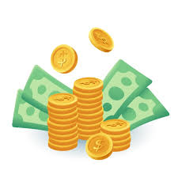
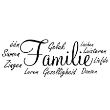

Ik ben Amerullah, en ik doe er alles aan om mijn doelen te bereiken, zelfs als dat ten koste gaat van mijn vrije tijd. Ik werk hard om mijn ambities waar te maken, zoals het opbouwen van een aanzienlijk vermogen en het creëren van succesvolle bedrijven. Mijn doel is om overal ter wereld te kunnen werken en mijn ouders alles te geven wat ze willen. Zij hebben immers veel voor mij opgeofferd, zoals tijd en geld, om mij een goede toekomst te bieden. Ik gun hen dan ook alles in de wereld.
Mijn hobby is sporten, en voetballen vind ik het leukst. Ik kan het uren doen zonder me te vervelen, of ik nu alleen ben of met vrienden. Daarnaast ben ik trainer en geef ik kinderen training. Ik vind het erg interessant om te zien hoe kinderen zich ontwikkelen. Het is mooi om te kunnen bijdragen aan hun groei en hen te helpen de beste versie van zichzelf te worden. Op die manier kunnen zij hun dromen bereiken.

Ik kom uit een grote familie. Ik heb twee zussen die getrouwd zijn en al kinderen hebben, dus ik ben al een oom. Daarnaast heb ik een grote broer, een broertje en twee lieve zusjes. Ik hou van mijn familie omdat ik veel liefde van hen krijg. Ze steunen me ook in het bereiken van mijn doelen. Ik werk hard om mijn ambities waar te maken en hen trots te maken. Op een dag, als ik alles heb, wil ik ze alles teruggeven. Ze staan altijd voor me klaar, zowel in goede als in slechte tijden. Ik kan altijd bij hen terecht zonder dat ze me beoordelen.
